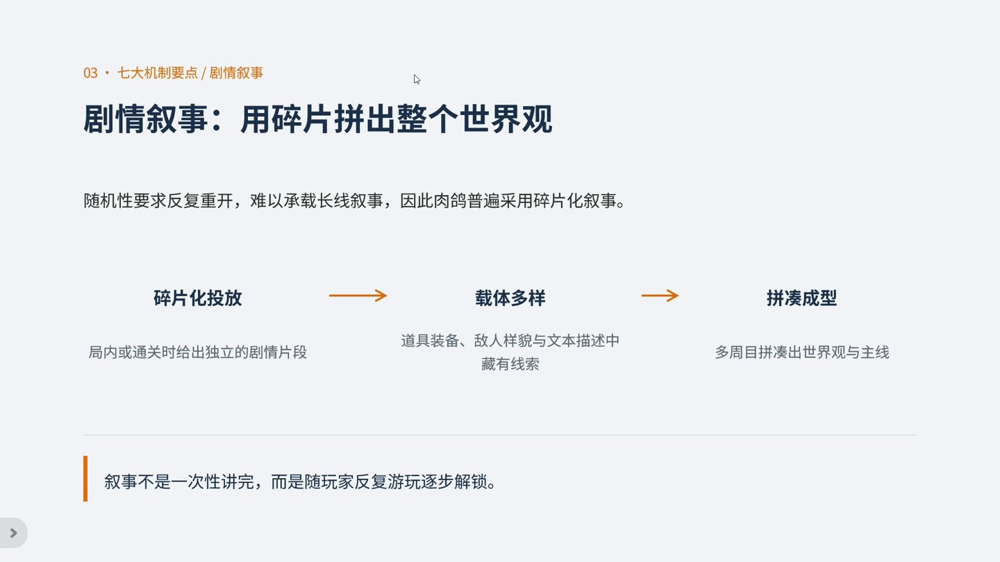
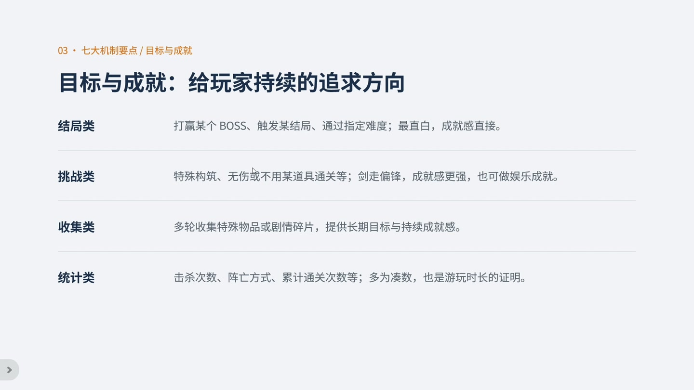

叙事与成就：把一次性体验拉成长线
前五套系统解决的是“这一局怎么打得好玩”。这一章解决的是两个更长期的问题：玩家为什么愿意反复进入同一个世界，以及通关之后为什么还有事可做。前者靠叙事，后者靠成就。
10.1 肉鸽的叙事困境
传统线性游戏的叙事是“一章接一章”：玩家推进到哪，故事就讲到哪。肉鸽做不到这件事，因为两个结构性原因：
- 玩家可能死在任何一层。如果第 5 层才揭示的关键剧情，80% 的玩家永远看不到，那这段叙事的投入就浪费了。
- 每一局都是重开。玩家这局打到第 3 层，下局又从第 1 层开始，线性叙事的“进度”无法累积。
视频里讲者的表述很直接：肉鸽每局都是随机的，每次都要反复重开，基本上无法适配长篇叙事。强行做线性剧情，结果通常是开场一段长 CG，之后剧情完全消失，玩家打通关也不知道自己在干什么。
碎片化叙事为什么天生适配
因为它把“完整的 story”拆成“可独立消费的片段”，每个片段不依赖前后顺序，玩家在任何一层、任何一局拿到它，都能获得一小块信息。多局之后，这些片段在玩家脑子里自动拼成全貌。
换句话说：叙事进度不挂在关卡进度上，而挂在玩家的好奇心与收集量上。
10.2 三件套：投放、载体、拼凑
视频里把碎片化叙事归纳成三个环节，这套结构可以直接照着做：
局内或通关时给出独立片段"] --> B["载体多样
道具描述、敌人图鉴、场景细节、CG"] B --> C["拼凑成型
多局累积后还原世界观"] C --> D["图鉴 / 收藏界面
让进度可见"] D --> A style A fill:#e7f3ff,stroke:#007acc,color:#14395a style C fill:#e9f7ec,stroke:#2e7d32,color:#14395a style D fill:#fff6e8,stroke:#e65100,color:#14395a
载体：把故事藏在玩家本来就会看的地方
这是最关键的一环。玩家不会主动去读设定集，但他一定会看道具描述、一定会注意敌人的样子。所以叙事要藏在这些“必经之处”：
| 载体 | 投入成本 | 玩家接触频率 | 适合承载 |
|---|---|---|---|
| 道具描述 | 低（一段文字） | 极高 | 世界观细节、势力关系、历史事件 |
| 敌人图鉴 | 中（文字 + 立绘） | 高 | 怪物的来历、感染/变异的原因 |
| 场景细节 | 中（美术资源） | 中 | 环境叙事，暗示发生过什么 |
| 通关 CG / 结局演出 | 高 | 低（但印象深） | 阶段性的主线揭示 |
| NPC 台词 / 事件文本 | 中 | 中 | 角色关系、当前处境的解释 |
视频里举的那个例子很能说明“载体组合”的威力：一把剑的描述写着“这是王国为了对抗某种瘟疫而打造的”，同时敌人的立绘上画着被感染后长满红疹、皮肤变异的形象。玩家把这两条信息拼起来，就自己得出了“这个世界正在爆发瘟疫，王国一直在派人抵抗”的结论——设计者没有写一句设定，玩家却完成了世界观构建。
节奏：不要打断战斗
碎片化叙事最常见的执行错误，是把文本塞在战斗中间。玩家正在躲弹幕，屏幕上弹出一段五百字的剧情，结果只有两种：跳过，或者死。
可用的投放时机：
- 结算界面：一局结束后的天然阅读窗口，玩家情绪已释放，愿意读。
- 房间之间的过场：走路时的短暂停留，适合一两句话。
- 图鉴解锁提示：只给“解锁了某条记录”，具体内容让玩家主动去翻。
单局投放量建议控制在 1–3 片。多了会变成阅读任务，少了玩家感觉不到叙事的存在。

10.3 成就：给随机性一个稳定的目标
肉鸽的目标是随机的：这局你可能抽到一个奇怪的组合，那局你可能一路顺风。这种随机性有一个副作用——玩家会觉得“这局好像没什么意义”。成就系统就是用来对冲这件事的：它提供了不随随机性变化的固定目标。
视频把成就分成四类，这四类的心理功能完全不同，不能混着做：
| 类型 | 典型条件 | 心理功能 | 设计注意 |
|---|---|---|---|
| 结局类 | 打败某个 Boss、触发某个结局、通过指定难度 | 最直白的成就感：“我打通了” | 数量不要太多，否则贬值；要与难度层级挂钩 |
| 挑战类 | 特殊构筑通关、无伤通关、不拿某类道具通关、叠到极限数值 | 剑走偏锋，成就感更强；也可做娱乐向（比如“被第一个小怪打死”） | 必须真的可完成，且工具有提示；否则变成劝退 |
| 收集类 | 集齐剧情碎片、集齐隐藏道具、集齐图鉴 | 提供长期目标与持续成就感 | 要有进度可视化，且单件获取不能太随机 |
| 统计类 | 击杀数、通关次数、累计游玩时长、死亡方式 | 证明投入的时间，满足“我玩得很深”的表达欲 | 多为凑数，不宜作为主要追求；但也别删干净 |
视频里对“统计类”的评价很到位：它多是凑数，但也是游玩时长的证明。比如“通关最终 Boss 10 次”这个成就，比“首次通关”更能证明玩家的投入，玩家也愿意拿它去展示。这类成就不需要设计得多精巧，它的价值在于给长时间游玩一个可炫耀的凭证。

10.4 成就与解锁的关系
第 5 章讲过“成就解锁”是局外成长的一条路线。这里要强调两者的分工：
- 成就用于展示：让玩家看到自己做到了什么，是荣誉体系。
- 解锁用于给予：达成条件后开放新内容，是内容供给。
同一个条件可以同时挂两者，但不要把所有成就都绑定解锁——那会让成就系统变成一张任务清单，玩家只会挑“有奖励的”去做。
10.5 实现：成就条件与结算钩子
using System;
using System.Collections.Generic;
using System.Linq;
public enum AchievementCategory { Ending, Challenge, Collection, Stat }
public class RunSummary
{
public bool Victory;
public int FloorReached;
public string KilledBy; // null 表示通关
public int Kills;
public int DamageTaken;
public List<string> Items = new();
public int DifficultyLevel;
}
public class AchievementDef
{
public string Id;
public AchievementCategory Category;
public string Title;
public bool Hidden;
public Func<RunSummary, bool> Condition; // 条件即委托，便于配置化替换
}
public class AchievementService
{
private readonly HashSet<string> _unlocked = new();
private readonly List<AchievementDef> _defs;
public AchievementService(List<AchievementDef> defs) { _defs = defs; }
/// <summary>在一局结束时统一结算，避免散落在各个系统里</summary>
public List<AchievementDef> Evaluate(RunSummary summary)
{
var newly = new List<AchievementDef>();
foreach (var def in _defs)
{
if (_unlocked.Contains(def.Id)) continue;
if (def.Condition == null) continue;
if (!def.Condition(summary)) continue;
_unlocked.Add(def.Id);
newly.Add(def);
}
return newly;
}
}
// 配置示例
public static class AchievementTable
{
public static List<AchievementDef> Build() => new()
{
new AchievementDef {
Id = "end_first_clear", Category = AchievementCategory.Ending,
Title = "初见终局", Condition = s => s.Victory },
new AchievementDef {
Id = "challenge_no_hit_floor5", Category = AchievementCategory.Challenge,
Title = "五层无伤", Condition = s => s.FloorReached >= 5 && s.DamageTaken == 0 },
new AchievementDef {
Id = "stat_clear_10", Category = AchievementCategory.Stat,
Title = "十次通关", Condition = s => s.Victory },
};
}
- 统一结算：所有成就都从
RunSummary一个入口判定，避免“某个成就在战斗里触发、某个在结算里触发”导致漏判或重复弹出。 - 累计型单独存：像“通关 10 次”这种跨局累计的条件，
RunSummary只看单局，必须另存一个计数器。上例为了简洁省略了，实际项目要补。
10.6 三个坑
文本过载
每件道具配三百字背景故事，玩家会全部跳过。单条描述控制在 40–80 字，把长内容放进图鉴，让愿意深挖的人自己点开。
成就纯凑数
“击杀 100 只史莱姆”“游玩 10 小时”这类成就如果占了大多数，玩家会把它当成噪音。统计类可以保留，但比例控制在 30% 以内。
叙事与玩法割裂
世界观说“你在对抗瘟疫”，玩法却完全没有瘟疫机制——玩家会觉得设定是硬贴的。好的做法是让叙事至少影响一个机制：比如某些敌人因感染而对火系伤害更脆弱。
判断练习 10-1
写下你项目的世界观核心句（一句话）。然后检查：这个设定有没有在任何机制里体现？如果没有，找出一个可以嫁接的机制，改掉它。
实现练习 10-2
把 AchievementService 扩展成支持跨局累计：加一个 Dictionary<string, int> _counters，并让 AchievementDef 支持“累计型条件”（例如通关次数），保证读档后计数不丢。
判断练习 10-3
给你的成就列一张表，按四类分组计数。如果统计类超过 30%、或挑战类全部集中在“无伤/极限”这种同质条件，重写三条。
本章小结
- 肉鸽无法承载线性叙事，碎片化叙事把故事拆成可独立消费的片段。
- 三件套：投放（结算/过场）、载体（道具/图鉴/场景/CG）、拼凑（图鉴可视化）。
- 单局投放 1–3 片，绝不在战斗中途弹长文本。
- 成就分四类，各自承担不同心理功能；挑战类完成率控制在 2%–10%。
- 成就负责展示，解锁负责给予，两者可以关联但不要完全绑定。